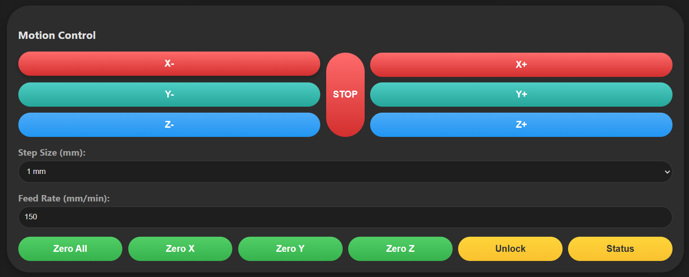
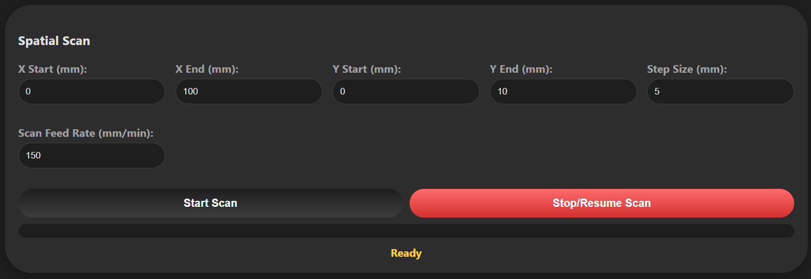
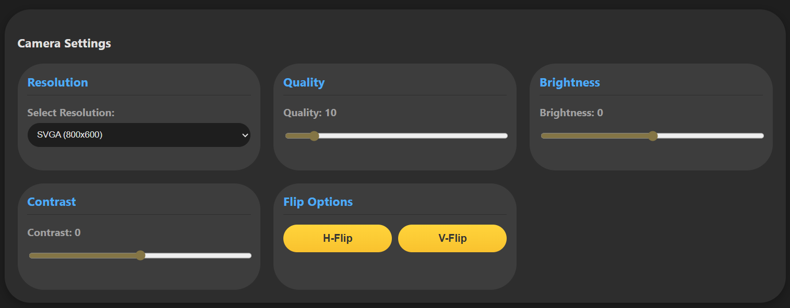
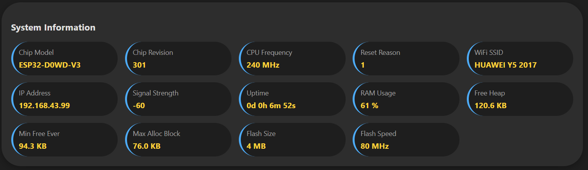

Firmware that turns an ESP32-CAM into a full CNC controller: it talks GRBL to an Arduino over serial, streams a live camera feed, serves a browser-based control dashboard, and can run automated grid scans that photograph a work area point by point.
Overview
A CNC machine you can only operate standing in front of loses a lot of its usefulness for observation-heavy tasks. This firmware puts an ESP32-CAM in front of an Arduino running GRBL, so the machine gets a browser-based dashboard, a live video stream, and a full HTTP API, on top of the GRBL control it already had.
The signal path runs from a web browser, to the ESP32-CAM's web server on port 80 and its MJPEG stream server on port 81, over UART serial at 115200 baud to the Arduino, into GRBL, and out to the stepper drivers.
Key features
- Live camera stream — an MJPEG feed from the ESP32-CAM, resolution and quality adjustable from the dashboard.
- Manual jogging — per-axis movement buttons with configurable step size (0.1–100 mm) and feed rate (10–5000 mm/min), plus a hardware-style stop and per-axis zeroing.
- Saved points — named positions persist in ESP32 memory across sessions, so the machine can return to a saved coordinate on command.
- Spatial scan — an automated grid scan across a defined X/Y area that captures an image at every step and saves it to the SD card.
- File browser — scan folders can be browsed, downloaded, or deleted directly from the dashboard.
- System info panel — chip model, CPU frequency, Wi-Fi signal, heap usage, and flash details, all in one view.
Hardware & wiring
The controller pairs an ESP32-CAM with an Arduino Uno, Nano, or Mega running GRBL, plus an SD card (FAT32) for scan storage. The serial link between them is a straightforward three-wire connection:
// ESP32-CAM ↔ Arduino (GRBL)
ESP32 TX (GPIO1) → Arduino RX
ESP32 RX (GPIO3) → Arduino TX
GND → GND
Wi-Fi credentials are configured over a serial terminal menu at first boot — scan for networks, select one, and enter the password — rather than hardcoding them into the firmware.
The web dashboard
Motion control puts jogging, step size, feed rate, zeroing, and unlock in one panel, with a dedicated stop button for when a run needs to halt immediately.

Spatial scan turns the machine into a simple imaging rig: define the X/Y boundaries and step size, set a scan feed rate, and the dashboard tracks progress as it works through the grid.

Camera settings expose resolution (up to UXGA), JPEG quality, brightness, contrast, and flip options, all adjustable without reflashing the firmware.

The system info panel is a fast way to check machine health — chip variant, uptime, Wi-Fi signal strength, and free heap — without opening a serial console.

HTTP API
Every dashboard action is backed by a plain HTTP endpoint, which makes the machine scriptable outside the browser too:
# Send a raw GRBL command curl "http://192.168.1.100/cmd?c=G0%20X10%20Y20%20F500" # Start a spatial scan curl "http://192.168.1.100/startscan?xstart=0&xend=100&ystart=0¥d=50&step=5&feed=150" # Check machine status curl http://192.168.1.100/status
The API covers GRBL commands and status, camera parameters, scan control and progress, saved-point management, and file operations on the SD card — download or delete a scan folder — giving the same control surface as the dashboard to any script or external tool.
Outcome
Pairing GRBL's proven motion control with a browser dashboard and an HTTP API turned a bench CNC setup into something that can be jogged, scanned, and monitored from anywhere on the network, with the raw camera and file access to back up whatever the dashboard doesn't cover.